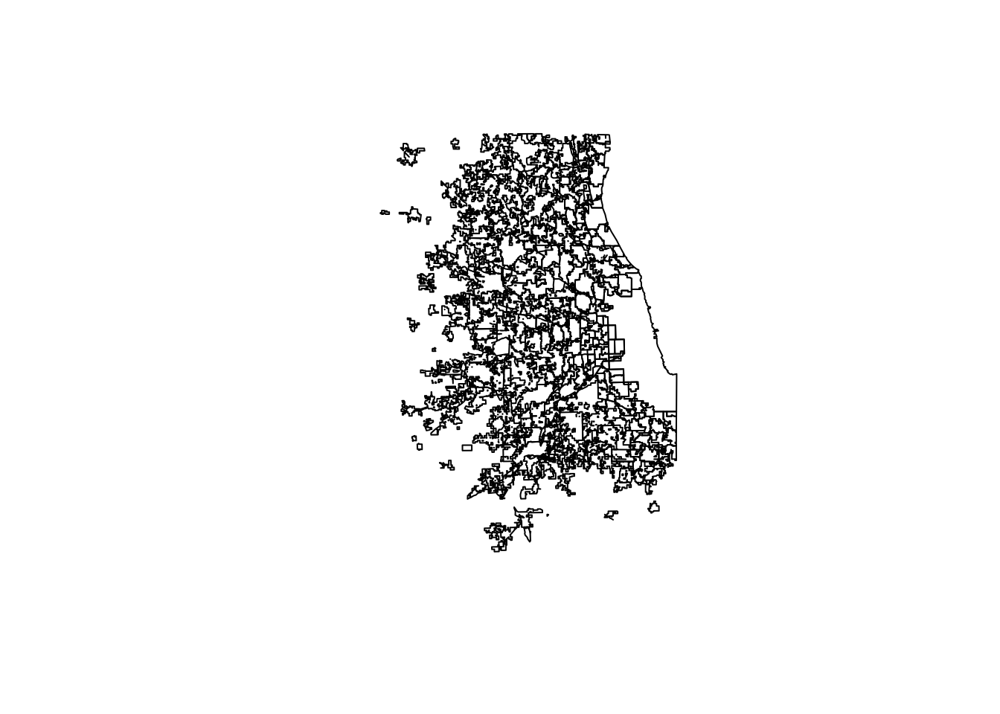

The data needs to be matched up with geographies in the form of shapefiles. Shapefiles are the electronic files that contain not just the shape of a place, but also any data that’s associated with that place.
First we load in the libraries we need and our data.
library(readr)
library(ggplot2)
library(rgdal)## Loading required package: sp## rgdal: version: 1.2-7, (SVN revision 660)
## Geospatial Data Abstraction Library extensions to R successfully loaded
## Loaded GDAL runtime: GDAL 2.1.2, released 2016/10/24
## Path to GDAL shared files: /Library/Frameworks/R.framework/Versions/3.3/Resources/library/rgdal/gdal
## Loaded PROJ.4 runtime: Rel. 4.9.1, 04 March 2015, [PJ_VERSION: 491]
## Path to PROJ.4 shared files: /Library/Frameworks/R.framework/Versions/3.3/Resources/library/rgdal/proj
## Linking to sp version: 1.2-4library(dplyr)##
## Attaching package: 'dplyr'## The following objects are masked from 'package:stats':
##
## filter, lag## The following objects are masked from 'package:base':
##
## intersect, setdiff, setequal, unionlibrary(ggmap)
df <- read_csv("data/all_crashData_0809.csv")## Parsed with column specification:
## cols(
## town = col_character(),
## town2 = col_character(),
## year = col_integer(),
## cycle_total = col_integer(),
## cycle_fatal = col_integer(),
## cycle_inj = col_integer(),
## ped_total = col_integer(),
## ped_fatal = col_integer(),
## ped_inj = col_integer(),
## total_crashes = col_integer(),
## total_inj = col_integer(),
## total_fatal = col_integer(),
## pop = col_number(),
## cycle_rate = col_double(),
## ped_rate = col_double(),
## total_rate = col_double()
## )Now let’s load in the shapefiles.
ill <- readOGR(dsn = "sixCoplaces/smaller2.shp")## OGR data source with driver: ESRI Shapefile
## Source: "sixCoplaces/smaller2.shp", layer: "smaller2"
## with 304 features
## It has 13 fieldshead(ill@data, n = 10)## STATEFP10 PLACEFP10 PLACENS10 GEOID10 NAME10 PLACE
## 0 17 82101 02397328 1782101 Wilmington 82101
## 1 17 74275 02399944 1774275 Symerton 74275
## 2 17 69758 02399813 1769758 Shorewood 69758
## 3 17 65442 02399114 1765442 Romeoville 65442
## 4 17 64902 02399104 1764902 Rockdale 64902
## 5 17 59052 02399653 1759052 Peotone 59052
## 6 17 52584 02399470 1752584 New Lenox 52584
## 7 17 49945 02399381 1749945 Monee 49945
## 8 17 49854 02399380 1749854 Mokena 49854
## 9 17 46357 02399240 1746357 Manhattan 46357
## NAME POPESTIMAT POPESTIM_1 POPESTIM_2 change2010
## 0 Wilmington city 5750 5705 5691 -59
## 1 Symerton village 87 89 89 2
## 2 Shorewood village 15669 16515 16948 1279
## 3 Romeoville village 39684 39754 39706 22
## 4 Rockdale village 1977 1955 1941 -36
## 5 Peotone village 4149 4131 4134 -15
## 6 New Lenox village 24425 25379 26217 1792
## 7 Monee village 5153 5098 5077 -76
## 8 Mokena village 18806 19445 20097 1291
## 9 Manhattan village 7089 7292 7546 457
## change20_1 change2014
## 0 -45 -14
## 1 2 0
## 2 846 433
## 3 70 -48
## 4 -22 -14
## 5 -18 3
## 6 954 838
## 7 -55 -21
## 8 639 652
## 9 203 254summary(ill@data)## STATEFP10 PLACEFP10 PLACENS10 GEOID10
## 17:304 00243 : 1 00428803: 1 1700243: 1
## 00685 : 1 02357470: 1 1700685: 1
## 01010 : 1 02392995: 1 1701010: 1
## 01595 : 1 02393000: 1 1701595: 1
## 02154 : 1 02393009: 1 1702154: 1
## 03012 : 1 02393010: 1 1703012: 1
## (Other):298 (Other) :298 (Other):298
## NAME10 PLACE NAME
## Addison : 1 00243 : 1 Addison village : 1
## Algonquin : 1 00685 : 1 Algonquin village : 1
## Alsip : 1 01010 : 1 Alsip village : 1
## Antioch : 1 01595 : 1 Antioch village : 1
## Arlington Heights: 1 02154 : 1 Arlington Heights village: 1
## Aurora : 1 (Other):279 (Other) :279
## (Other) :298 NA's : 20 NA's : 20
## POPESTIMAT POPESTIM_1 POPESTIM_2 change2010
## Min. : 0 Min. : 0 Min. : 0 Min. :-2636.00
## 1st Qu.: 3686 1st Qu.: 3726 1st Qu.: 3727 1st Qu.: -86.25
## Median : 10444 Median : 10454 Median : 10375 Median : -8.50
## Mean : 26088 Mean : 26325 Mean : 26247 Mean : 158.82
## 3rd Qu.: 23385 3rd Qu.: 23516 3rd Qu.: 23270 3rd Qu.: 115.75
## Max. :2697736 Max. :2718530 Max. :2704958 Max. : 7222.00
##
## change20_1 change2014
## Min. :-2998.0 Min. :-13572.00
## 1st Qu.: 0.0 1st Qu.: -149.00
## Median : 41.0 Median : -30.50
## Mean : 237.1 Mean : -78.26
## 3rd Qu.: 192.8 3rd Qu.: 0.00
## Max. :20794.0 Max. : 1526.00
## smaller2.shp are the places - meaning towns and other municipalities - in the six-county area. Shapefiles can be very large and detailed, the shapes in he shapes have been simplified in a mapping program called Qgis. By simplified, we mean the shapes have been reduced in complexity - they have fewer points, which keeps the file size down.
The shapes aren’t going to be accurate to the square foot, but they’re still representative of the municipality.
The data in the file can be accessed using the “@” sign instead of a “$” for dataframes. And, it’s called “data”.
We can see the shapes using the “plot” command.
plot(ill)
We can test how well the data will match up. We’ll see if the town names in ill@data match up with the town names in our dataframe.
ill$NAME10 %in% df$town## [1] TRUE FALSE TRUE TRUE TRUE TRUE TRUE TRUE TRUE TRUE TRUE
## [12] TRUE FALSE TRUE TRUE TRUE FALSE TRUE TRUE TRUE TRUE TRUE
## [23] TRUE TRUE TRUE TRUE TRUE TRUE TRUE TRUE TRUE TRUE TRUE
## [34] TRUE TRUE TRUE TRUE TRUE TRUE TRUE TRUE TRUE TRUE TRUE
## [45] TRUE TRUE TRUE TRUE TRUE TRUE TRUE TRUE TRUE TRUE FALSE
## [56] FALSE TRUE FALSE TRUE TRUE FALSE TRUE TRUE TRUE TRUE TRUE
## [67] TRUE FALSE FALSE TRUE FALSE TRUE TRUE FALSE FALSE FALSE FALSE
## [78] FALSE FALSE FALSE FALSE FALSE TRUE TRUE TRUE TRUE TRUE TRUE
## [89] TRUE TRUE TRUE TRUE TRUE TRUE TRUE TRUE TRUE TRUE TRUE
## [100] TRUE TRUE TRUE TRUE TRUE TRUE TRUE TRUE TRUE TRUE TRUE
## [111] TRUE TRUE TRUE TRUE TRUE TRUE TRUE TRUE TRUE TRUE TRUE
## [122] TRUE TRUE TRUE TRUE TRUE TRUE TRUE TRUE TRUE TRUE TRUE
## [133] TRUE TRUE TRUE TRUE TRUE TRUE TRUE TRUE TRUE TRUE TRUE
## [144] TRUE TRUE TRUE TRUE TRUE TRUE TRUE TRUE TRUE TRUE TRUE
## [155] TRUE TRUE TRUE TRUE TRUE TRUE TRUE TRUE TRUE FALSE TRUE
## [166] TRUE TRUE TRUE TRUE TRUE TRUE TRUE TRUE TRUE TRUE TRUE
## [177] TRUE TRUE TRUE TRUE TRUE TRUE TRUE TRUE TRUE TRUE TRUE
## [188] TRUE TRUE TRUE TRUE TRUE TRUE TRUE TRUE FALSE TRUE FALSE
## [199] FALSE TRUE FALSE FALSE TRUE TRUE TRUE FALSE TRUE FALSE TRUE
## [210] TRUE TRUE TRUE TRUE TRUE FALSE TRUE TRUE TRUE TRUE TRUE
## [221] TRUE TRUE TRUE TRUE TRUE TRUE TRUE TRUE TRUE TRUE TRUE
## [232] TRUE TRUE FALSE TRUE TRUE TRUE TRUE TRUE TRUE TRUE TRUE
## [243] TRUE TRUE FALSE TRUE TRUE TRUE FALSE TRUE TRUE TRUE TRUE
## [254] TRUE TRUE TRUE FALSE TRUE TRUE TRUE TRUE TRUE TRUE TRUE
## [265] FALSE TRUE FALSE TRUE TRUE TRUE FALSE FALSE TRUE TRUE TRUE
## [276] FALSE TRUE FALSE TRUE TRUE TRUE TRUE TRUE TRUE TRUE FALSE
## [287] FALSE FALSE FALSE FALSE FALSE FALSE FALSE FALSE FALSE FALSE FALSE
## [298] FALSE FALSE FALSE FALSE FALSE FALSE FALSEThat results in a lot of “false” results, where there was no match for a place.
We ended up exporting the data and looking at it in excel. We found that all the towns in our data set match up with the geo data. The false results were towns for which we had no data.
The next problem is reworking our data so we can match it up a town. If you look at the dataframe, you’ll see that each town has up to four rows (one for each year). We need each town to have only one row, to match up with the one geography.
First we grab the data by year
df2012 <- df[df$year == 2012,]
df2013 <- df[df$year == 2013,]
df2014 <- df[df$year == 2014,]
df2015 <- df[df$year == 2015,]Then we need to rename the columns so their names aren’t duplicated. While we’re at it, we’ll delete or null some columns we don’t need anymore.
df2012 <- rename(df2012,
cycle_total_2012 = cycle_total,
cycle_fatal_2012 = cycle_fatal,
cycle_inj_2012 = cycle_inj,
ped_total_2012 = ped_total,
ped_fatal_2012 = ped_fatal,
ped_inj_2012 = ped_inj,
total_crashes_2012 = total_crashes,
total_inj_2012 = total_inj,
total_fatal_2012 = total_fatal,
pop_2012 = pop,
cycle_rate_2012 = cycle_rate,
ped_rate_2012 = ped_rate,
total_rate_2012 = total_rate
)
df2012$town2 = NULL
df2012$year = NULL
df2013 <- rename(df2013,
cycle_total_2013 = cycle_total,
cycle_fatal_2013 = cycle_fatal,
cycle_inj_2013 = cycle_inj,
ped_total_2013 = ped_total,
ped_fatal_2013 = ped_fatal,
ped_inj_2013 = ped_inj,
total_crashes_2013 = total_crashes,
total_inj_2013 = total_inj,
total_fatal_2013 = total_fatal,
pop_2013 = pop,
cycle_rate_2013 = cycle_rate,
ped_rate_2013 = ped_rate,
total_rate_2013 = total_rate
)
df2013$town2 = NULL
df2013$year = NULL
df2014 <- rename(df2014,
cycle_total_2014 = cycle_total,
cycle_fatal_2014 = cycle_fatal,
cycle_inj_2014 = cycle_inj,
ped_total_2014 = ped_total,
ped_fatal_2014 = ped_fatal,
ped_inj_2014 = ped_inj,
total_crashes_2014 = total_crashes,
total_inj_2014 = total_inj,
total_fatal_2014 = total_fatal,
pop_2014 = pop,
cycle_rate_2014 = cycle_rate,
ped_rate_2014 = ped_rate,
total_rate_2014 = total_rate
)
df2014$town2 = NULL
df2014$year = NULL
df2015 <- rename(df2015,
cycle_total_2015 = cycle_total,
cycle_fatal_2015 = cycle_fatal,
cycle_inj_2015 = cycle_inj,
ped_total_2015 = ped_total,
ped_fatal_2015 = ped_fatal,
ped_inj_2015 = ped_inj,
total_crashes_2015 = total_crashes,
total_inj_2015 = total_inj,
total_fatal_2015 = total_fatal,
pop_2015 = pop,
cycle_rate_2015 = cycle_rate,
ped_rate_2015 = ped_rate,
total_rate_2015 = total_rate
)
df2015$town2 = NULL
df2015$year = NULLThen we can take those new dataframes and join them to the geo data
We’ll also delete out some columns from the geo data that we don’t need anymore.
ill@data <- left_join(ill@data, df2012, by = c('NAME10' = 'town'))## Warning: Column `NAME10`/`town` joining factor and character vector,
## coercing into character vectorill@data <- left_join(ill@data, df2013, by = c('NAME10' = 'town'))
ill@data <- left_join(ill@data, df2014, by = c('NAME10' = 'town'))
ill@data <- left_join(ill@data, df2015, by = c('NAME10' = 'town'))
ill@data$POPESTIMAT <- NULL
ill@data$POPESTIM_1 <- NULL
ill@data$POPESTIM_2 <- NULL
ill@data$change2010 <- NULL
ill@data$change2014 <- NULL
ill@data$change20_1 <- NULL
names(ill)## [1] "STATEFP10" "PLACEFP10" "PLACENS10"
## [4] "GEOID10" "NAME10" "PLACE"
## [7] "NAME" "cycle_total_2012" "cycle_fatal_2012"
## [10] "cycle_inj_2012" "ped_total_2012" "ped_fatal_2012"
## [13] "ped_inj_2012" "total_crashes_2012" "total_inj_2012"
## [16] "total_fatal_2012" "pop_2012" "cycle_rate_2012"
## [19] "ped_rate_2012" "total_rate_2012" "cycle_total_2013"
## [22] "cycle_fatal_2013" "cycle_inj_2013" "ped_total_2013"
## [25] "ped_fatal_2013" "ped_inj_2013" "total_crashes_2013"
## [28] "total_inj_2013" "total_fatal_2013" "pop_2013"
## [31] "cycle_rate_2013" "ped_rate_2013" "total_rate_2013"
## [34] "cycle_total_2014" "cycle_fatal_2014" "cycle_inj_2014"
## [37] "ped_total_2014" "ped_fatal_2014" "ped_inj_2014"
## [40] "total_crashes_2014" "total_inj_2014" "total_fatal_2014"
## [43] "pop_2014" "cycle_rate_2014" "ped_rate_2014"
## [46] "total_rate_2014" "cycle_total_2015" "cycle_fatal_2015"
## [49] "cycle_inj_2015" "ped_total_2015" "ped_fatal_2015"
## [52] "ped_inj_2015" "total_crashes_2015" "total_inj_2015"
## [55] "total_fatal_2015" "pop_2015" "cycle_rate_2015"
## [58] "ped_rate_2015" "total_rate_2015"Now let’s save the new dataframe and read it back in.
write_csv(ill@data,"data/mapdata.csv")
cycped <- read.csv("data/mapdata.csv", stringsAsFactors = FALSE)
head(cycped)## STATEFP10 PLACEFP10 PLACENS10 GEOID10 NAME10 PLACE
## 1 17 82101 2397328 1782101 Wilmington 82101
## 2 17 74275 2399944 1774275 Symerton 74275
## 3 17 69758 2399813 1769758 Shorewood 69758
## 4 17 65442 2399114 1765442 Romeoville 65442
## 5 17 64902 2399104 1764902 Rockdale 64902
## 6 17 59052 2399653 1759052 Peotone 59052
## NAME cycle_total_2012 cycle_fatal_2012 cycle_inj_2012
## 1 Wilmington city 1 0 0
## 2 Symerton village NA NA NA
## 3 Shorewood village 3 0 3
## 4 Romeoville village 1 0 1
## 5 Rockdale village 1 1 0
## 6 Peotone village NA NA NA
## ped_total_2012 ped_fatal_2012 ped_inj_2012 total_crashes_2012
## 1 1 0 1 2
## 2 NA NA NA NA
## 3 1 0 1 4
## 4 9 1 7 10
## 5 NA NA NA 1
## 6 2 0 2 2
## total_inj_2012 total_fatal_2012 pop_2012 cycle_rate_2012 ped_rate_2012
## 1 1 0 5918 0.17 0.17
## 2 NA NA NA NA NA
## 3 4 0 15611 0.19 0.06
## 4 8 1 39175 0.03 0.23
## 5 0 1 1909 0.52 0.00
## 6 2 0 4703 0.00 0.43
## total_rate_2012 cycle_total_2013 cycle_fatal_2013 cycle_inj_2013
## 1 0.34 2 0 1
## 2 NA NA NA NA
## 3 0.26 1 0 1
## 4 0.26 6 0 6
## 5 0.52 NA NA NA
## 6 0.43 NA NA NA
## ped_total_2013 ped_fatal_2013 ped_inj_2013 total_crashes_2013
## 1 1 0 1 3
## 2 NA NA NA NA
## 3 1 0 1 2
## 4 3 1 2 9
## 5 NA NA NA NA
## 6 NA NA NA NA
## total_inj_2013 total_fatal_2013 pop_2013 cycle_rate_2013 ped_rate_2013
## 1 2 0 6028 0.33 0.17
## 2 NA NA NA NA NA
## 3 2 0 15906 0.06 0.06
## 4 8 1 39520 0.15 0.08
## 5 NA NA NA NA NA
## 6 NA NA NA NA NA
## total_rate_2013 cycle_total_2014 cycle_fatal_2014 cycle_inj_2014
## 1 0.50 NA NA NA
## 2 NA NA NA NA
## 3 0.13 1 0 1
## 4 0.23 5 0 5
## 5 NA 1 0 0
## 6 NA 1 0 1
## ped_total_2014 ped_fatal_2014 ped_inj_2014 total_crashes_2014
## 1 NA NA NA NA
## 2 NA NA NA NA
## 3 2 1 1 3
## 4 5 2 3 10
## 5 2 1 1 3
## 6 1 0 1 2
## total_inj_2014 total_fatal_2014 pop_2014 cycle_rate_2014 ped_rate_2014
## 1 NA NA NA NA NA
## 2 NA NA NA NA NA
## 3 2 1 16186 0.06 0.12
## 4 8 2 39675 0.13 0.13
## 5 1 1 1974 0.51 1.01
## 6 2 0 4122 0.24 0.24
## total_rate_2014 cycle_total_2015 cycle_fatal_2015 cycle_inj_2015
## 1 NA NA NA NA
## 2 NA NA NA NA
## 3 0.19 2 0 2
## 4 0.25 4 0 4
## 5 1.52 NA NA NA
## 6 0.49 NA NA NA
## ped_total_2015 ped_fatal_2015 ped_inj_2015 total_crashes_2015
## 1 NA NA NA NA
## 2 NA NA NA NA
## 3 3 0 3 5
## 4 4 0 4 8
## 5 1 0 1 1
## 6 NA NA NA NA
## total_inj_2015 total_fatal_2015 pop_2015 cycle_rate_2015 ped_rate_2015
## 1 NA NA NA NA NA
## 2 NA NA NA NA NA
## 3 5 0 16354 0.12 0.18
## 4 8 0 39774 0.10 0.10
## 5 1 0 2061 0.00 0.49
## 6 NA NA NA NA NA
## total_rate_2015
## 1 NA
## 2 NA
## 3 0.31
## 4 0.20
## 5 0.49
## 6 NAJust a few more steps.
Now we take the shapefile and process it so we can do mapping in R.
ill_f <- fortify(ill, region="GEOID10")Once we do that, we need to rejoin the data we saved to the new geo file. One minor thing we have to do is set up the geoid number in the new geo file as a number, so that we can join it with the geoid in our data file (which is already a recognized as a number)
ill_f$id <- as.numeric(as.character(ill_f$id))
ill_f <- left_join(ill_f, cycped, by = c('id' = 'GEOID10'))Now that it’s joined, we write the file out as a csv so we can use it for mapping.
write_csv(ill_f,"data/ill_f.csv")Finally, let’s import and process a shapefile of the six counties, to make it easier to recognize where things are.
counties <- readOGR(dsn = "sixcounties/SixCounties.shp")## OGR data source with driver: ESRI Shapefile
## Source: "sixcounties/SixCounties.shp", layer: "SixCounties"
## with 7 features
## It has 5 fieldsnames(counties@data)## [1] "statefp10" "countyfp10" "countyns10" "geoid10" "namelsad10"co6 <- fortify(counties, region="geoid10")
write_csv(co6,"data/counties6.csv")Now we can do some exploratory mapping to see how the data plays out across the region.